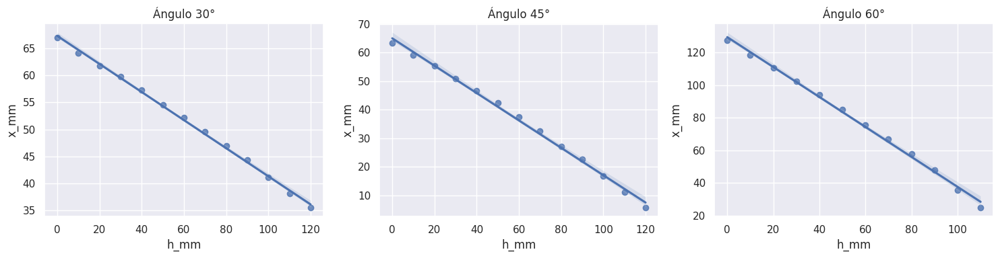

Code
import cv2
import numpy as np
import pandas as pd
import os
import zipfile
import re
from google.colab.patches import cv2_imshow
from scipy import stats
import seaborn as sns
import matplotlib.pyplot as plt
import cv2
import numpy as np
import pandas as pd
import os
import zipfile
import re
from google.colab.patches import cv2_imshow
from scipy import stats
import seaborn as sns
import matplotlib.pyplot as plt
# Estilo por defecto para notebooks.
sns.set_theme('notebook')Se descargan las imágenes tomadas sin procesar desde un repositorio en GitHub.
def get_images_base_path():
url = "https://github.com/dmorad1004/med_optica/raw/refs/heads/main/raw.zip"
output_zip = "raw.zip"
if not os.path.exists(output_zip):
!wget -O {output_zip} {url}
with zipfile.ZipFile(output_zip, 'r') as zip_ref:
zip_ref.extractall(".")
base_path = os.path.abspath("raw")
print(f"Imágenes extraídas en: {base_path}")
return base_pathbase_path = get_images_base_path()--2025-04-21 01:09:27-- https://github.com/dmorad1004/med_optica/raw/refs/heads/main/raw.zip
Resolving github.com (github.com)... 140.82.116.4
Connecting to github.com (github.com)|140.82.116.4|:443... connected.
HTTP request sent, awaiting response... 302 Found
Location: https://raw.githubusercontent.com/dmorad1004/med_optica/refs/heads/main/raw.zip [following]
--2025-04-21 01:09:28-- https://raw.githubusercontent.com/dmorad1004/med_optica/refs/heads/main/raw.zip
Resolving raw.githubusercontent.com (raw.githubusercontent.com)... 185.199.108.133, 185.199.109.133, 185.199.110.133, ...
Connecting to raw.githubusercontent.com (raw.githubusercontent.com)|185.199.108.133|:443... connected.
HTTP request sent, awaiting response... 200 OK
Length: 388774 (380K) [application/zip]
Saving to: ‘raw.zip’
raw.zip 100%[===================>] 379.66K --.-KB/s in 0.03s
2025-04-21 01:09:28 (11.8 MB/s) - ‘raw.zip’ saved [388774/388774]
Imágenes extraídas en: /content/rawSe define una función para calcular la posición del punto láser en cada imagen. El cálculo del centroide se realiza utilizando una analogía con el centro de masa, donde la intensidad del canal rojo actúa como “peso” en cada píxel. Para evitar que el fondo oscuro de la imagen (aunque no sea completamente negro) influya en el cálculo, se aplica un umbral de intensidad mínima.
A partir del centroide en píxeles y la escala de conversión previamente obtenida, se calcula su posición en milímetros. Además, se extrae la altura del nivel del agua directamente desde el nombre del archivo, el cual sigue la convención:
{altura}_mm_{ángulo}_raw.jpgPor ejemplo, 10mm_30_raw.jpg corresponde a una imagen tomada con \(10\,\text{mm}\) de agua y un ángulo de incidencia de \(30^\circ\).
La función devuelve un DataFrame ordenado por altura, con las coordenadas del punto láser tanto en píxeles como en milímetros.
def get_positions(path_images, scale_mm_px, umbral_red=30):
"""
Detecta el centroide del punto láser en cada imagen, ponderando por intensidad del canal rojo,
con umbral para excluir el fondo oscuro.
Parámetros:
- path_images (str): Carpeta con las imágenes.
- scale_mm_px (float): Escala en mm por píxel.
- umbral_red (int): Valor mínimo del canal rojo para contar como parte del spot.
Retorna:
- DataFrame con columnas: ['archivo', 'h_mm', 'x_px', 'y_px', 'x_mm', 'y_mm']
"""
datos = []
for archivo in sorted(os.listdir(path_images)):
if not archivo.lower().endswith((".jpg", ".png", ".jpeg")):
continue
# Extraer la altura desde el nombre
match = re.match(r"(\d+)mm", archivo)
if not match:
continue
h_mm = int(match.group(1))
ruta = os.path.join(path_images, archivo)
img = cv2.imread(ruta)
if img is None:
continue
red = img[:, :, 2]
h, w = red.shape
X, Y = np.meshgrid(np.arange(w), np.arange(h))
# Aplicar máscara por umbral
mask = red > umbral_red
red_filtrada = red * mask
total_intensidad = red_filtrada.sum()
if total_intensidad == 0:
continue
cx_px = (X * red_filtrada).sum() / total_intensidad
cy_px = (Y * red_filtrada).sum() / total_intensidad
cx_mm = cx_px * scale_mm_px
cy_mm = cy_px * scale_mm_px
# Descomentar si se desea ver el punto en cada imagen
# cv2.circle(img, (int(cx_px), int(cy_px)), 5, (0,255,0), -1)
# cv2_imshow(img)
# cv2.waitKey(0)
datos.append({
"archivo": archivo,
"h_mm": h_mm,
"x_px": cx_px,
"y_px": cy_px,
"x_mm": cx_mm,
"y_mm": cy_mm
})
return pd.DataFrame(datos).sort_values("h_mm").reset_index(drop=True)El índice de refracción se estima a partir de un ajuste lineal entre la posición horizontal del punto láser (x) y la altura del nivel de agua (h), para un ángulo de incidencia fijo. Esta relación es lineal según la geometría del experimento, y su pendiente está relacionada con el ángulo de refracción del haz.
Una vez ajustada la recta \(x = m \cdot h\), se aplica la ley de Snell para calcular el índice de refracción:
\(n = \sqrt{ \left( \frac{\sin \theta_i}{m} \right)^2 + \sin^2 \theta_i }\)
donde \(\theta_i\) es el ángulo de incidencia.
def get_refractive_index(h_mm, x_mm, theta_i_deg):
"""
Calcula el índice de refracción y su incertidumbre a partir de un ajuste lineal de x vs h.
Parámetros:
- h_mm: array-like, alturas del agua [mm]
- x_mm: array-like, posiciones del spot [mm]
- theta_i_deg: ángulo de incidencia en grados
Retorna:
- n: índice de refracción calculado
- n_err: incertidumbre del índice
- slope: pendiente del ajuste
- m_err: error estándar de la pendiente
- r_value: coeficiente de correlación lineal
"""
res = stats.linregress(h_mm, x_mm)
slope = res.slope
m_err = res.stderr
r_value = res.rvalue
# Convertir ángulo a radianes
theta_i_rad = np.deg2rad(theta_i_deg)
sin_theta_i = np.sin(theta_i_rad)
# Calcular índice de refracción
n = np.sqrt((sin_theta_i / slope)**2 + sin_theta_i**2)
# Propagar incertidumbre de m
dn_dm = - (sin_theta_i**2 / slope**3) / np.sqrt((sin_theta_i / slope)**2 + sin_theta_i**2)
n_err = abs(dn_dm) * m_err
return n, n_err, slope, m_err, r_valueCon el fin de evaluar la sensibilidad del montaje experimental para distintos ángulos de incidencia, se calcula el desplazamiento total del punto láser en el eje \(x\) para cada conjunto de imágenes.
Este desplazamiento, dado por \(\Delta x = x_{\text{max}} - x_{\text{min}}\), permite cuantificar cuánto se mueve el punto de impacto del láser al aumentar el nivel del agua. Un mayor valor de \(\Delta x\) indica una mayor sensibilidad del experimento a cambios en el índice de refracción, lo cual mejora la confiabilidad del resultado obtenido para \(n\).
Este análisis permite justificar, de forma cuantitativa, cuál de los ángulos de incidencia proporciona una medición más confiable del índice de refracción.
def calculate_delta_x(df):
"""
Calcula el desplazamiento total del punto láser en el eje x para un conjunto de datos.
Parámetro:
- df: DataFrame con columna 'x_mm'
Retorna:
- delta_x: desplazamiento máximo en mm
"""
x_min = df["x_mm"].min()
x_max = df["x_mm"].max()
return abs(x_max - x_min)Se define una función que permite generar un resumen completo del análisis para cada conjunto de datos asociado a un ángulo de incidencia. Esta función reporta:
def report_index_summary(df, angle_deg):
"""
Imprime el resumen del índice de refracción a partir de un DataFrame de datos y un ángulo.
Parámetros:
- df: DataFrame con columnas 'h_mm' y 'x_mm'
- angle_deg: ángulo de incidencia en grados
"""
n_real = 1.33
n_exp, n_err, m, m_err, r_value = get_refractive_index(df["h_mm"], df["x_mm"], angle_deg)
delta_x = calculate_delta_x(df)
rel_error = abs(n_exp - n_real) / n_real * 100
r_squared = r_value ** 2
print(f"Ángulo de incidencia: {angle_deg}°")
print(f"Índice de refracción: {n_exp:.4f} ± {n_err:.4f}")
print(f"Pendiente (m): {m:.4f} ± {m_err:.4f}")
print(f"R^2: {r_squared:.4f}")
print(f"Error relativo porcentual (%): {rel_error:.2f}%")
print(f"Desplazamiento total en x: {delta_x:.4f} mm")
print("-" * 40)Se aplica la función de detección del centroide a cada conjunto de imágenes correspondiente a los tres ángulos de incidencia utilizados en el experimento: 30°, 45° y 60°.
Cada carpeta contiene las imágenes asociadas a un único ángulo, y la escala de conversión milímetros por píxel se ajusta de acuerdo con la calibración específica de cada conjunto.
El resultado es un DataFrame por ángulo, con la posición del punto láser en función de la altura del nivel del agua.
df_angle_30=get_positions(f"{base_path}/30",30/152,umbral_red=20)
df_angle_45=get_positions(f"{base_path}/45",30/152,umbral_red=20)
df_angle_60=get_positions(f"{base_path}/60",30/192,umbral_red=20)
df_angle_60| archivo | h_mm | x_px | y_px | x_mm | y_mm | |
|---|---|---|---|---|---|---|
| 0 | 0mm_60_raw.jpg | 0 | 815.945080 | 1058.238650 | 127.491419 | 165.349789 |
| 1 | 10mm_60_raw.jpg | 10 | 758.379829 | 1065.057349 | 118.496848 | 166.415211 |
| 2 | 20mm_60_raw.jpg | 20 | 707.037966 | 1071.030753 | 110.474682 | 167.348555 |
| 3 | 30mm_60_raw.jpg | 30 | 655.685926 | 1077.106455 | 102.450926 | 168.297884 |
| 4 | 40mm_60_raw.jpg | 40 | 600.889264 | 1083.614735 | 93.888947 | 169.314802 |
| 5 | 50mm_60_raw.jpg | 50 | 543.570124 | 1090.446205 | 84.932832 | 170.382220 |
| 6 | 60mm_60_raw.jpg | 60 | 484.399704 | 1097.257829 | 75.687454 | 171.446536 |
| 7 | 70mm_60_raw.jpg | 70 | 428.800213 | 1104.017803 | 67.000033 | 172.502782 |
| 8 | 80mm_60_raw.jpg | 80 | 369.981006 | 1111.148185 | 57.809532 | 173.616904 |
| 9 | 90mm_60_raw.jpg | 90 | 307.982075 | 1119.695054 | 48.122199 | 174.952352 |
| 10 | 100mm_60_raw.jpg | 100 | 228.696607 | 1131.726637 | 35.733845 | 176.832287 |
| 11 | 110mm_60_raw.jpg | 110 | 159.854356 | 1139.260355 | 24.977243 | 178.009431 |
report_index_summary(df_angle_30, angle_deg=30)
report_index_summary(df_angle_45, angle_deg=45)
report_index_summary(df_angle_60, angle_deg=60)Ángulo de incidencia: 30°
Índice de refracción: 1.9866 ± 0.0248
Pendiente (m): -0.2601 ± 0.0035
R^2: 0.9980
Error relativo porcentual (%): 49.36%
Desplazamiento total en x: 31.4916 mm
----------------------------------------
Ángulo de incidencia: 45°
Índice de refracción: 1.6358 ± 0.0244
Pendiente (m): -0.4794 ± 0.0088
R^2: 0.9963
Error relativo porcentual (%): 23.00%
Desplazamiento total en x: 57.5166 mm
----------------------------------------
Ángulo de incidencia: 60°
Índice de refracción: 1.2815 ± 0.0122
Pendiente (m): -0.9168 ± 0.0160
R^2: 0.9970
Error relativo porcentual (%): 3.65%
Desplazamiento total en x: 102.5142 mm
----------------------------------------En esta sección se generan los gráficos para responder el cuestionario, no tienen que ver necesariamente con el análisis de datos.
fig, axes = plt.subplots(1, 3, figsize=(15, 4))
sns.regplot(ax=axes[0], data=df_angle_30, x="h_mm", y="x_mm")
axes[0].set_title("Ángulo 30°")
sns.regplot(ax=axes[1], data=df_angle_45, x="h_mm", y="x_mm")
axes[1].set_title("Ángulo 45°")
sns.regplot(ax=axes[2], data=df_angle_60, x="h_mm", y="x_mm")
axes[2].set_title("Ángulo 60°")
plt.tight_layout()
plt.show()